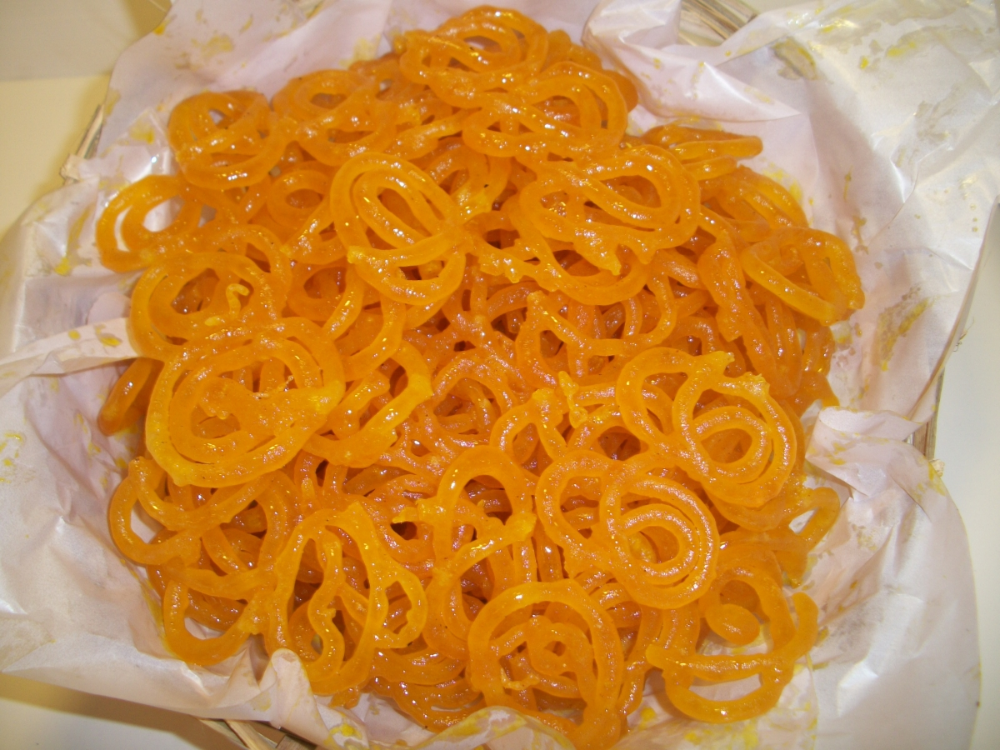
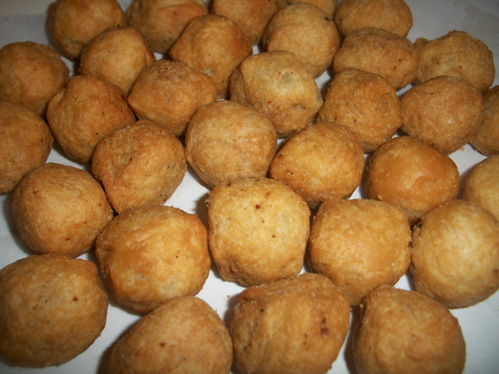
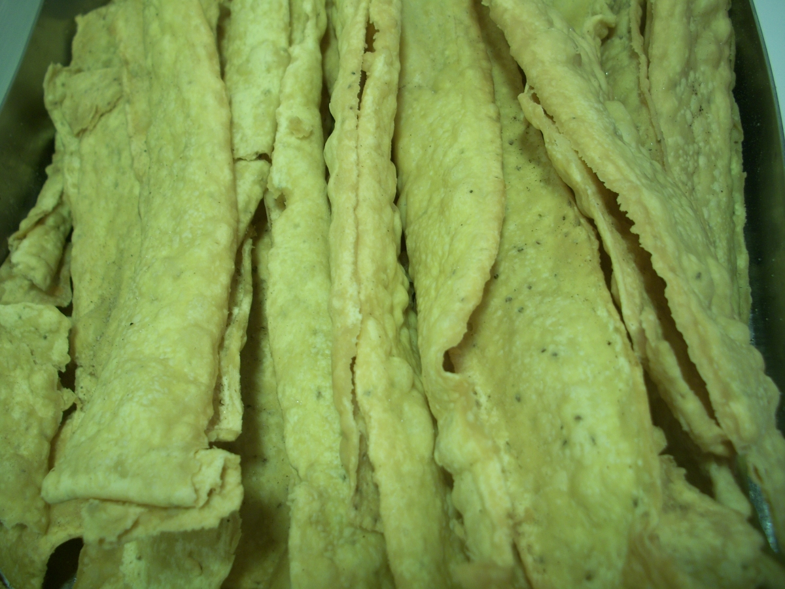
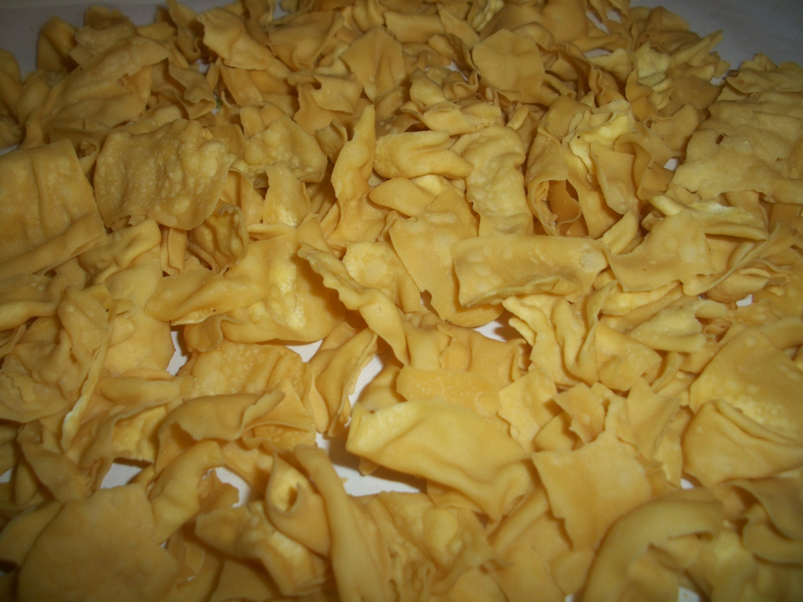

" Mumbai's best.Simply "
| Home | About Us | Our Varieties | Contact Us |
 Our Varieties
Our Varieties 
| All dishes are prepared under hygenic and maintained condition. To add more we have Bhavnagri Gathya, Surti Gathya, wheat Khakras and many other munching snacks. |
|  |
Jalebi
is sweet, popular in countries of the Souht Asia , the Middle East, North Africa and East Africa. It is made by deep frying a wheat flour batter in circular shapes , which are then soaked in sugar syrup. This crispy mithai is made from pure ghee. |
|  |
Kachori
Mouth watering moong dal kachoris appeals to every one's taste buds. It is a spicy snack popular in various parts of India including Uttar Prodaesh, Rajasthan, Delhi, Maharashtra, Madhya Pradesh, Gujrat, Bengal and Orissa. |
|  |
Fafda
It is a crunchy snack made from chickpea flour and served with hot fried chillis or chutney. |

|
Methi Bhajiya
A great snack to have during winter and rainy season. A healthy and tasty methi pakoda or methi bhajiya is an Indian recipe with methi leaves cut and then mixed with gram flour or besan. The methi pakodas or bhajiyas are crispy and also rich in the goodness of methi leaves. |
|  |
Papadi
Papadi are Indian crackers made from besan and deep fried to add tatse to it. It is normally served with papaya chutney and fried chillis. |